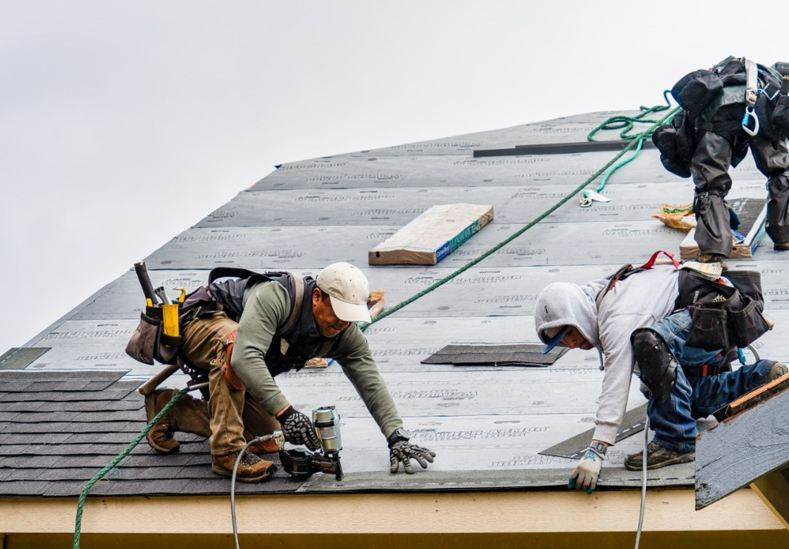
De keuze voor de juiste aanpak vergt…
Wij zijn specialist in renovatie en onderhoud van daken
Keramische pannen
Bitumen
EPDM
Zink & lood
Van lekkage en reparatie tot een compleet nieuw dak: vakkundig werk en een vrijblijvende offerte.
Vooraf een heldere prijs, zonder verplichtingen.
Korte lijnen van eerste contact tot oplevering.
Net en zorgvuldig werk met oog voor de afwerking.
Bij spoed snel bereikbaar voor een afspraak.
Van een acuut lek tot een compleet nieuw dak. U weet vooraf wat u krijgt en wat het kost, uitgevoerd door onze eigen ploeg.

Wij zijn specialist in renovatie en onderhoud van daken

Met de loodgieters van Cazdak Dakbedekkingen hebben we alle werkzaamheden die benodigd zijn voor een complete dakrenovatie in eigen hand. Deze…
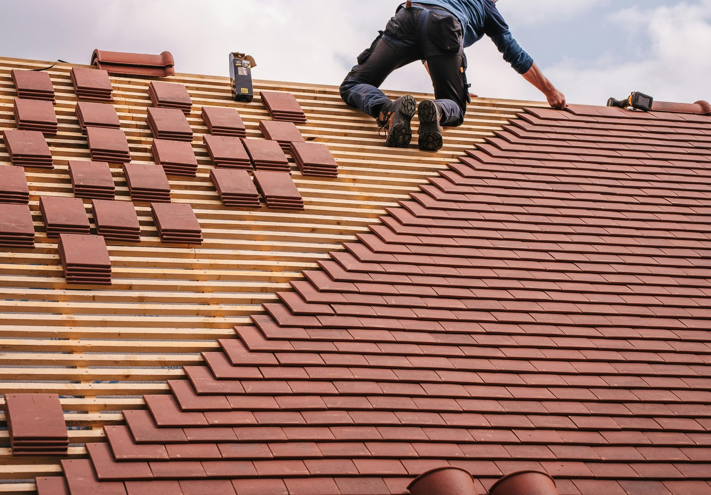
Geen probleem! We staan je graag te woord, laat je gegevens achter en wij nemen contact met je op.
Vakkundig. Persoonlijk. Resultaatgericht. Het is Cazdak in een notendop.
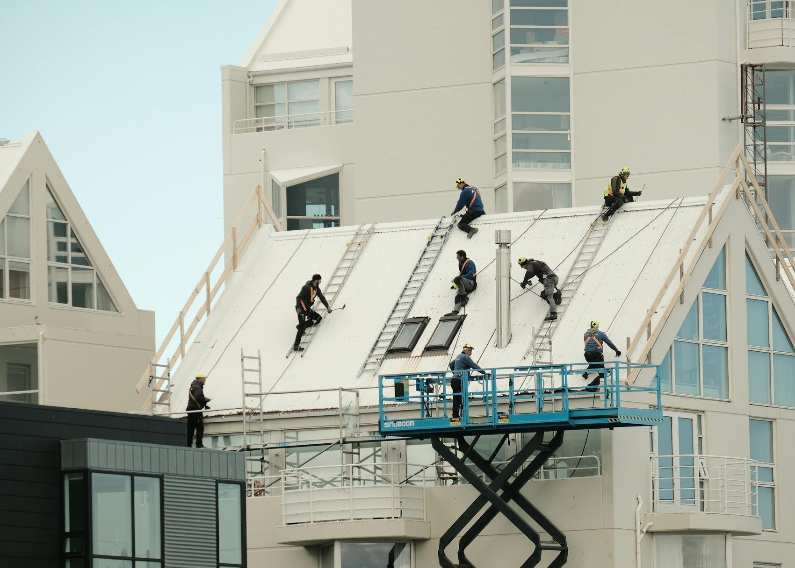
Zo pakken wij uw dakklus aan, helder en stap voor stap.
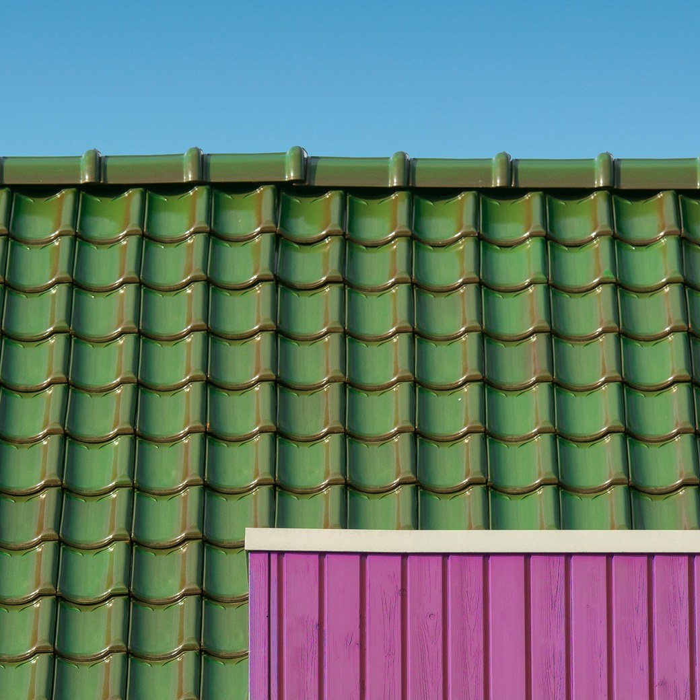
Van advies tot dagelijks onderhoud, we helpen u met de juiste dakoplossing.
Zelfde dag contact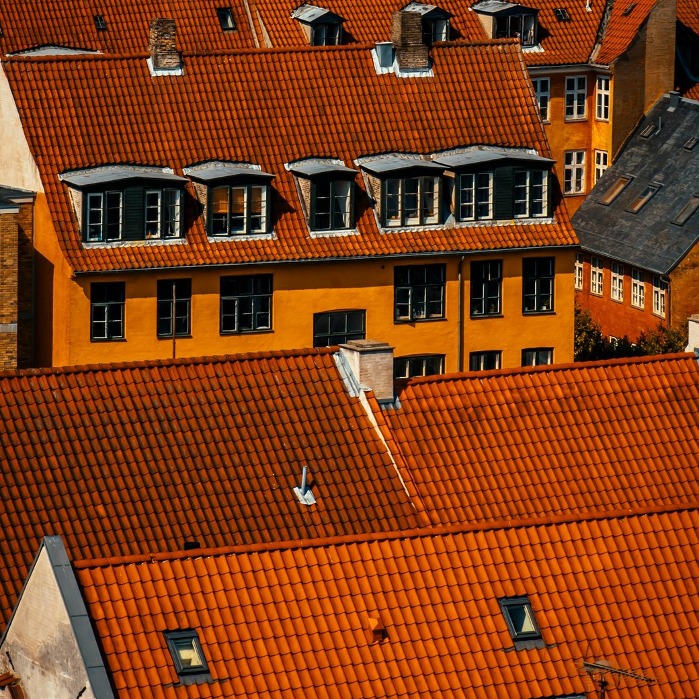
Wij voeren dakbedekkingswerk uit met vakmanschap en kwaliteit.
Binnen 24 uur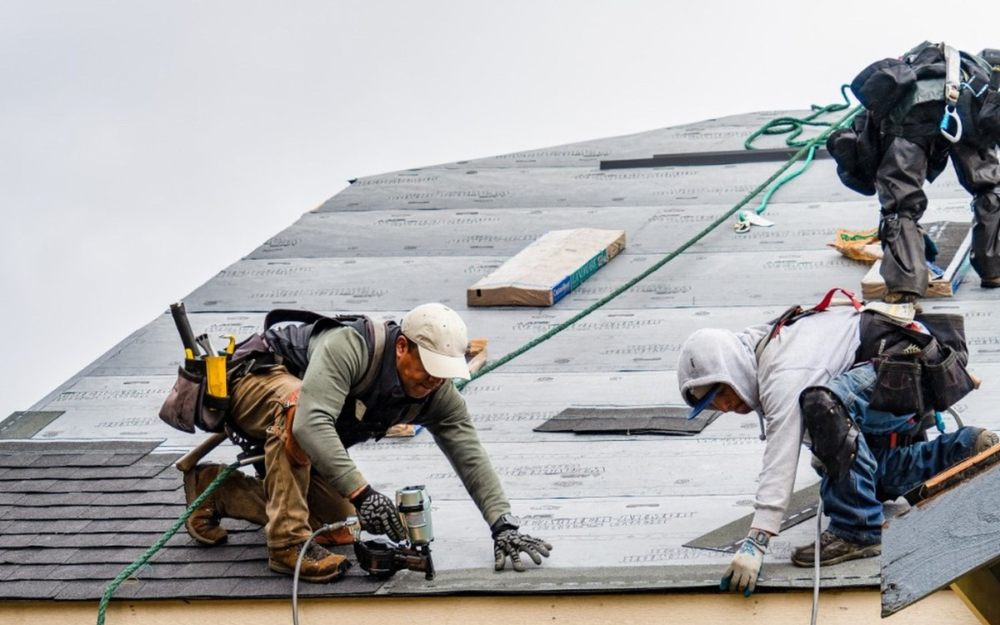
Met dagelijks onderhoud houden we uw dak in optimale conditie.
Op afspraakBetrouwbaar dakwerk met heldere afspraken en persoonlijk contact.
Onze klanten hebben een vast aanspreekpunt dat altijd met zorg klaar staat.
Met afdelingen Dakbedekking, Installatietechniek en Dakbehoud hebben we alles beschikbaar.
Kwaliteit en bedrijfsprocessen geborgd volgens ISO 9001, ISO 14001 en VCA.
Korte lijnen en heldere communicatie van begin tot eind.
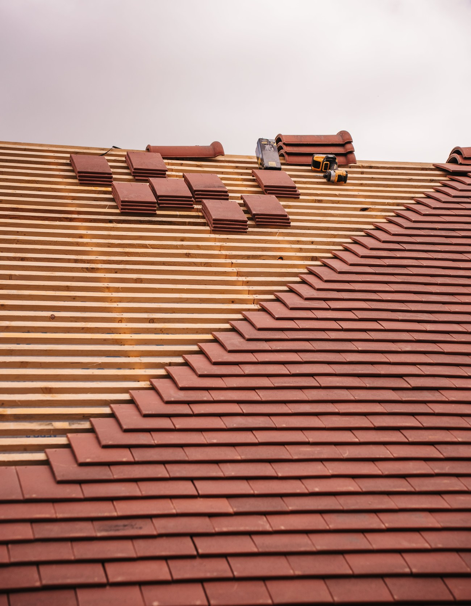
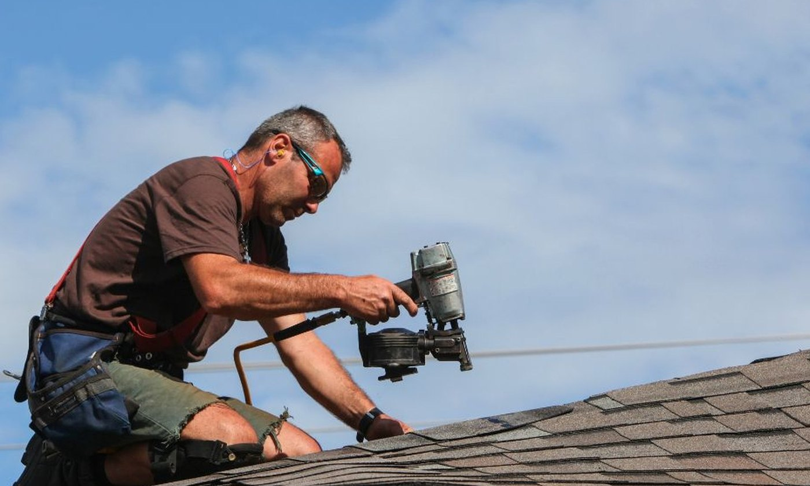
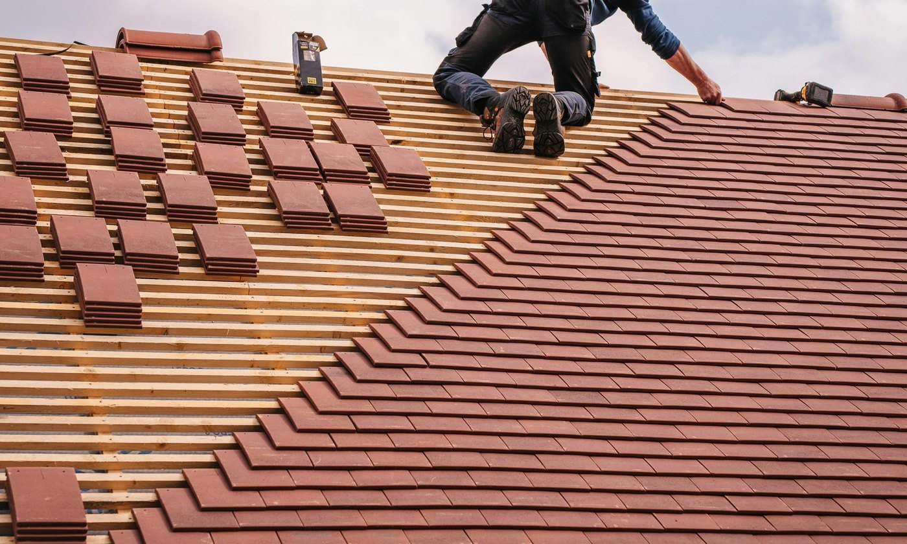
Geen marketingpraat, maar wat onze planning en garantiemap laten zien.
Een greep uit recent werk.
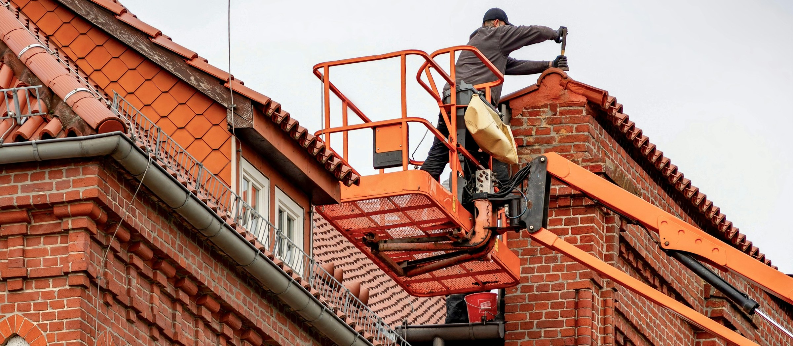
Oud dak verwijderd, nieuw isolatiepakket en keramische pannen aangebracht.
Opgeleverd in 5 dagen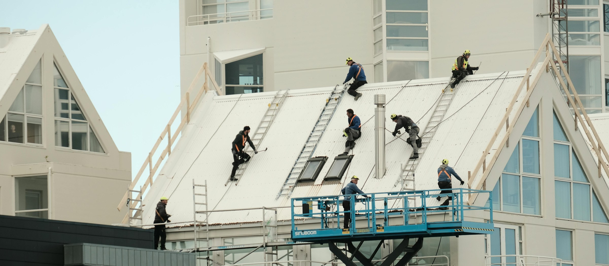
Volledig waterdicht EPDM-dak met nieuwe afvoeren aangelegd.
10 jaar garantieTwee uitgelichte beoordelingen, rechtstreeks van Google.
Cazdak heeft de afgelopen periode 2x5 platte daken bij ons voorzien van een nieuwe bitumen dakbedekking. Het contact met Cazdak is uitstekend, de offerte is professioneel en uitgebreid en antwoorden op vragen voor en tijdens de…
Erg snel geholpen nadat de toilet niet meer door trok. Binnen 12 uur was de monteur ter plaatse en de volgende dag werd het bestelde onderdeel geplaatst. Nette jongen ook die het niet vervelend vond om zijn schoenen uit te trekken.
Korte, heldere stukken over onderhoud, isolatie en materiaalkeuze, in gewone taal uitgelegd.
Vul het formulier in of bel ons direct. U hoort binnen 24 uur van ons, met een heldere prijs en zonder verplichtingen.
Acuut lek of stormschade? Bel direct. Bij spoed zijn we 24/7 bereikbaar en meestal binnen 24 uur op locatie.
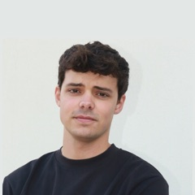
NicolasHarv AgencyWij bouwen premium sites zonder premium prijs.
Plan een gesprekWat u hier ziet is maar een klein deel van wat we voor u kunnen bouwen. Wij maken premium sites, zonder het premium prijskaartje. Plan een vrijblijvend gesprek van 20 minuten, dan laten we de rest zien.
Plan een gesprekWe hebben alleen de homepagina alvast voor u gemaakt — een klein deel van de service. Wij bouwen premium sites, zonder het premium prijskaartje. Plan een gesprek als het u bevalt.
Plan een gesprek